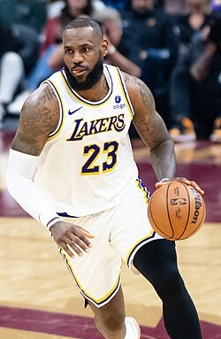
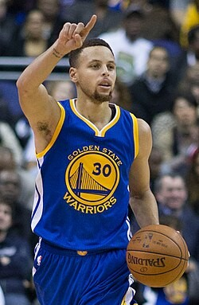
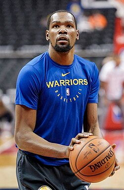
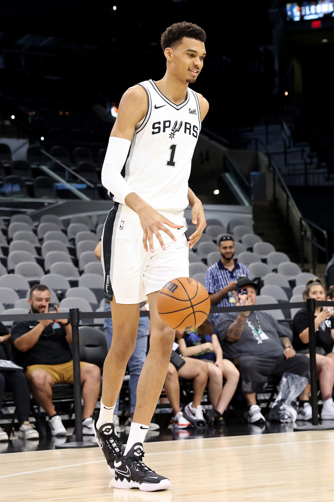

LeBron James
Nacido en 1984

LeBron James es considerado uno de los mejores jugadores de baloncesto de todos los tiempos. Ha ganado múltiples campeonatos de la NBA y ha sido MVP en varias ocasiones.
Descubre información sobre los jugadores más famosos del baloncesto

LeBron James es considerado uno de los mejores jugadores de baloncesto de todos los tiempos. Ha ganado múltiples campeonatos de la NBA y ha sido MVP en varias ocasiones.

Stephen Curry es conocido por su habilidad para lanzar triples y ha revolucionado la forma en que se juega el baloncesto moderno. Ha ganado varios campeonatos con los Golden State Warriors.

Kevin Durant es un anotador prolífico y ha sido una pieza clave en los equipos en los que ha jugado. Ha ganado múltiples premios MVP y campeonatos de la NBA.

Victor Wembanyama es un jugador de baloncesto francés que ha sido una figura destacada en la NBA. Es conocido por su altura excepcional y habilidades únicas en el juego.